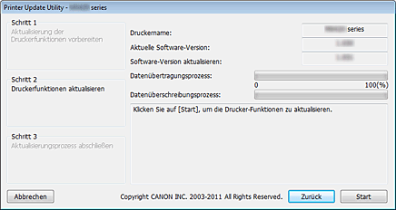

Betriebsumgebung für das Dienstprogramm für Drucker-Updates (Printer Update Utility)
-
Zielbetriebssysteme
-
Windows
-
- Windows 8, Windows 7, Windows Vista, Windows XP
-
Mac OS
-
- Mac OS X v10.8, Mac OS X v10.7, Mac OS X v10.6, Mac OS X v10.5.8
-
-
Anforderungen
-
- Computer, auf dem der Druckertreiber installiert ist.
-
Öffnen Sie unter Windows im Eigenschaften-Fenster des Druckertreibers die Registerkarte Anschlüsse, und wählen Sie Bidirektionale Unterstützung aktivieren aus. Anweisungen zum Öffnen des Eigenschaften-Fensters finden Sie im Online-Handbuch, das mit dem Drucker geliefert wurde.
-
- Drucker, den Sie verwenden.
-
- USB-Kabel
-
- Dienstprogramm für Drucker-Updates (Printer Update Utility)
 Wichtig
Wichtig
-
Prüfen, ob ein Update erforderlich ist
Sie können durch Drucken eines Düsentestmusters ermitteln, ob ein Update erforderlich ist.
Prüfen Sie die Version der Software bzw. Firmware (Ver. X.XXX) in den Druckergebnissen des Düsentestmusters. Ist die Firmwareversion niedriger als 2.000, ist ein Firmwareupdate erforderlich.
Nehmen Sie das Update wie im Folgenden unter "Vorgehensweise für Firmwareupdates" beschrieben vor.
 Hinweis
Hinweis
-
Anweisungen zum Drucken des Düsentestmusters finden Sie im Online-Handbuch, das mit dem Drucker geliefert wurde.
Vorgehensweise für Firmwareupdates
-
Verbinden Sie den Computer und Drucker mit einem USB-Kabel.
Ist ein LAN-Kabel oder USB-Kabel zum Anschließen einer Kamera vorhanden, ziehen Sie dies ab.
Bei Modellen mit Kartensteckplätzen entfernen Sie alle Karten, die sich möglicherweise in den Steckplätzen befinden.
Hinweis
-
Stellen Sie sicher, dass nur ein Drucker über ein USB-Kabel an den Computer angeschlossen ist.
Wichtig
-
Stellen Sie unter Mac OS sicher, dass der Computer so eingestellt ist, dass er nicht in den Ruhezustand wechselt.
-
-
Doppelklicken Sie unter Windows auf
 (Printer Update.exe), um das Update-Dienstprogramm zu starten.
(Printer Update.exe), um das Update-Dienstprogramm zu starten.
Doppelklicken Sie unter Mac OS auf
(Drucker-Update), um das Update-Dienstprogramm zu starten.
-
Prüfen Sie die in Schritt 1 des Dienstprogramms für Drucker-Updates genannten Punkte, schalten Sie den Drucker ein, und klicken Sie auf Weiter (Next).
Hinweis
-
Wenn eine Fehlermeldung angezeigt wird, kann es dafür folgende Gründe geben:
-
Grund (1): Das USB-Kabel ist nicht angeschlossen.
Abhilfe: Schließen Sie das USB-Kabel an, und beginnen Sie wieder bei Schritt 1. -
Grund (2): Die heruntergeladene Update-Datei ist für einen anderen Drucker bestimmt.
Abhilfe: Laden Sie die Datei für den zu aktualisierenden Drucker herunter, und beginnen Sie wieder bei Schritt 1.
-
-
-
Prüfen Sie die in Schritt 2 des Dienstprogramms für Drucker-Updates genannten Punkte, schalten Sie den Drucker ein, und klicken Sie auf Start.
*Je nach verwendetem Betriebssystem können die angezeigten Fenster abweichen.
Druckername (Printer Name): Name des Druckers, der an den Computer angeschlossen ist.
Aktuelle Software-Version (Current Software Version): Softwareversion des angeschlossenen Druckers.
Software-Version aktualisieren (Update Software Version): Die Softwareversion, auf die der Drucker aktualisiert wird.
Wichtig
-
Schalten Sie den Drucker erst aus und trennen Sie das USB-Kabel erst dann, wenn das Update abgeschlossen ist. Andernfalls kann ein Fehler auftreten.
-
-
Wenn Start nicht angezeigt wird, wird das Update auf einem Drucker ausgeführt, für den keine Firmware-Aktualisierung nötig ist. Prüfen Sie erneut die Aktuelle Software-Version. Brechen Sie den Update-Vorgang ab, wenn kein Update erforderlich ist.
-
Während des Updates blinkt die Fehleranzeige am Drucker orange.
-
Wenn das in Schritt 3 des Dienstprogramms für Drucker-Updates genannte Fenster angezeigt wird, prüfen Sie den Inhalt der Meldung, und klicken Sie auf Beenden (Quit).
Dadurch wird das Firmwareupdate abgeschlossen.
Wenn die Aktualisierung der Version abgeschlossen ist, wird der Drucker automatisch ausgeschaltet. Um den Drucker zu verwenden, ziehen Sie zunächst das Netzkabel ab, schließen Sie es wieder an, und schalten Sie dann den Drucker wieder ein.
Wenn Sie den Drucker über eine LAN-Verbindung verwenden, ziehen Sie das USB-Kabel zunächst ab, und schließen Sie dann das LAN-Kabel an.
Wichtig
-
Wenn Sie den Drucker über eine LAN-Verbindung nutzen, setzen Sie die normale Druckereinstellung auf die LAN-Verbindung zurück.
Wählen Sie zum Zurücksetzen der LAN-Verbindungseinstellung unter Windows "Canon XXX Printer/Canon XXX Drucker" mit dem Anschlussnamen "CNBJNPxxxxxxxxxx" aus.
Anweisungen zur Einstellung finden Sie im Online-Handbuch, das mit dem Drucker geliefert wurde.
Hinweis
-
Wenn der Drucker während des Updates ausgeschaltet wird, kann das Update nicht auf normale Weise beendet werden.
Wenn der Drucker nicht ordnungsgemäß funktioniert, obwohl Sie den Drucker aus- und dann wieder eingeschaltet haben, wurde das Update u. U. nicht auf normale Weise beendet.
-
Hinweis
Fehlerursachen und Abhilfemaßnahmen
Wenn während der Ausführung des Dienstprogramms für Drucker-Updates ein Fehler auftritt, wird eine Fehlermeldung ausgegeben.
Führen Sie in diesem Fall die Schritte durch, die in der Fehlermeldung als Abhilfemaßnahmen genannt werden.
In der folgenden Tabelle werden die Ursachen und Abhilfemaßnahmen der am häufigsten angezeigten Fehlermeldungen aufgelistet.
|
Meldung |
Ursache |
Abhilfe |
|---|---|---|
Unter Windows oder Mac OS |
||
|
Dieses Programm wird von Ihrem aktuell verwendeten Betriebssystem nicht unterstützt. |
Es wurde versucht, das Dienstprogramm für Drucker-Updates auf einem Betriebssystem auszuführen, das vom Dienstprogramm nicht unterstützt wird. |
Führen Sie das Dienstprogramm für Drucker-Updates auf einem unterstützten Betriebssystem aus. |
|
Es ist mehr als ein Drucker angeschlossen. Stellen Sie sicher, dass nur ein Drucker über ein USB-Kabel mit dem Computer verbunden ist, und starten Sie das Dienstprogramm anschließend erneut. |
Zwei oder mehr zu aktualisierende Drucker sind an den Computer angeschlossen. |
Schließen Sie nur einen Drucker an. |
|
Der Druckerstatus ist nicht korrekt. Schalten Sie den Drucker erneut ein, und starten Sie das Dienstprogramm anschließend erneut. |
Der Drucker konnte das Update nicht ausführen. |
Schalten Sie den Drucker wieder ein. |
|
Während der Aktualisierung der Druckerfunktionen ist ein Fehler aufgetreten. Da die Aktualisierung fehlgeschlagen ist, kann der Drucker aktuell nicht benutzt werden. Schalten Sie den Drucker erneut ein, und stellen Sie sicher, dass das Dienstprogramm anschließend erneut gestartet wird. |
Der Drucker wurde ausgeschaltet oder das USB-Kabel wurde während der Ausführung des Updates abgezogen. |
Drücken Sie die Taste OK, um das Dienstprogramm für Drucker-Updates zu beenden. Schalten Sie den Drucker aus, warten Sie einige Sekunden, und schalten Sie ihn dann wieder ein. Falls der Drucker nicht ordnungsgemäß gestartet wird oder das Update nicht ausgeführt werden kann, sind Wartungs-/Reparaturmaßnahmen erforderlich. |
Unter Windows |
||
|
Der Drucker wurde nicht gefunden. Überprüfen Sie die folgenden Punkte, und starten Sie das Dienstprogramm anschließend erneut.
|
|
|
|
Unter Mac OS |
||
|
Mac OS X Classic wird gerade ausgeführt. |
Es wurde versucht, das Dienstprogramm für Drucker-Updates zu verwenden, während Classic unter Mac OS X ausgeführt wurde. |
Beenden Sie Classic, und starten Sie das Dienstprogramm für Drucker-Updates unter Mac OS X. |
|
Der Drucker wurde nicht gefunden. Überprüfen Sie die folgenden Punkte, und starten Sie das Dienstprogramm anschließend erneut.
|
|
|